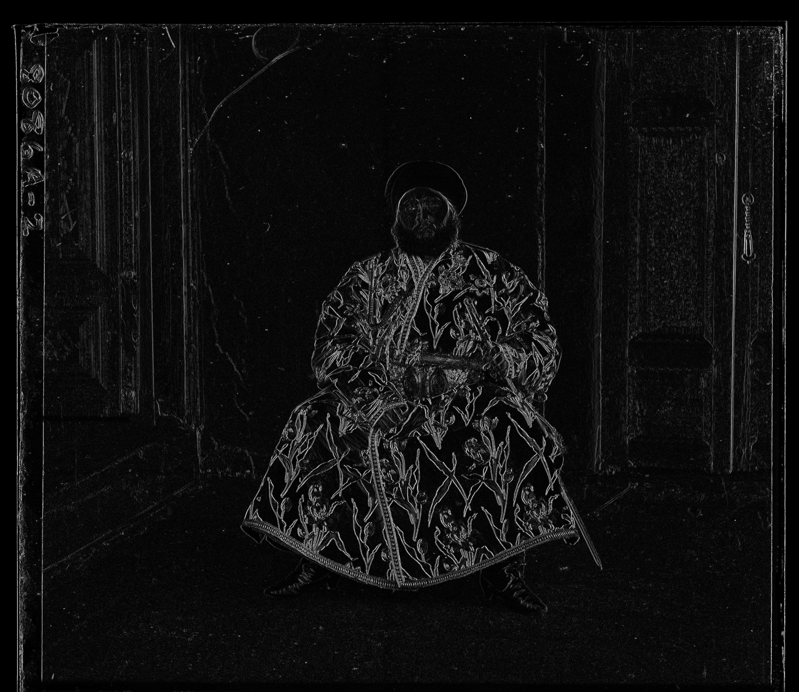

MENU
home page
CV
coursework
projects
experience
Course Projects
Pintos Operating System (CS 162)
End-to-End File Sharing System (CS 161)
Colorizing the Prokudin-Gorskii Collection (CS 194-26)

Fun with Filters and Frequencies (CS 194-26)
Face Morphing (CS 194-26)